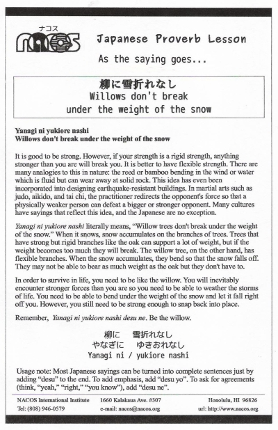

Yanagi ni yukiore nashi
Willows don't break under the weight of the snow
It is good to be strong. However, if your strength is a rigid strength, anything stronger than you are will break you. It is better to have flexible strength. There are many analogies to this in nature: the reed or bamboo bending in the wind or water which is fluid but can wear away at solid rock. This idea has even been incorporated into designing earthquake-resistant buildings. In martial arts such as judo, aikido, and tai chi, the practitioner redirects the opponent's force so that a physically weaker person can defeat a bigger or stronger opponent. Many cultures have sayings that reflect this idea, and the Japanese are no exception.
Yanagi ni yukiore nashi literally means, “Willow trees don't break under the weight of the snow.” When it snows, snow accumulates on the branches of trees. Trees that have strong but rigid branches like the oak can support a lot of weight, but if the weight becomes too much they will break. The willow tree, on the other hand, has flexible branches. When the snow accumulates, they bend so that the snow falls off. They may not be able to bear as much weight as the oak but they don't have to.
In order to survive in life, you need to be like the willow. You will inevitably encounter stronger forces than you are so you need to be able to weather the storms of life. You need to be able to bend under the weight of the snow and let it fall right off you. However, you still need to be strong enough to snap back into place.
Remember, Yanagi ni yukiore nashi desu ne. Be the willow.
Usage note: Most Japanese sayings can be turned into complete sentences just by adding “desu” to the end. To add emphasis, add “desu yo”. To ask for agreements (think, “yeah,” “right,” “you know”), add “desu ne”.

| © 1995-2013 NACOS International Institute. All Rights Reserved. |